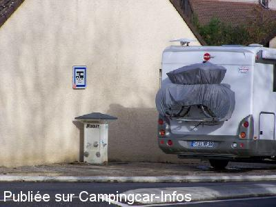
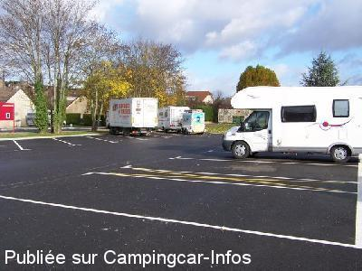

ASN = Aire de services avec stationnement nuit possible de :
GIVRY
(N° 850)
Accès/adresse :
Rue de la Gare
71640 GIVRY
71640 GIVRY
Latitude : (Nord) 46.78022° Décimaux ou 46° 46′ 48′′
Longitude : (Est) 4.74836° Décimaux ou 4° 44′ 54′′
Tarif : 2015
Stationnement gratuit
Eau ou 1 h d'électricité : 2 €
Jetons à retirer à l'Office de Tourisme
Type de borne : EURO-RELAIS
Services :


Autres informations :
Aire aménagée, goudronnée et éclairée
Tél Office du Tourisme : +33(0)385 444 336
http://givry.tourisme.71.free.fr/Camping%20cars%20et%20camping.htm

Le 12/11/2009 par Fred_25

Le 12/11/2009 par Fred_25
de
DENIS ET YOLAINE
le 12/06/2015 :
Bravo et merci à la commune pour mettre à notre disposition cette aire très bien faite .
Bravo et merci à la commune pour mettre à notre disposition cette aire très bien faite .
de
LG
le 26/05/2015 :
Aire calme, très bien adaptée et préparée. Merci à la municipalité.
Aire calme, très bien adaptée et préparée. Merci à la municipalité.
de
RUDY
le 05/10/2014 :
De passage pour la nuit, nous avons apprécié cet endroit. Par contre l'accès au parking et à la borne de services est assez compliqué avec un camping-car de plus de 7 m. En effet l'aménagement du rond-point gène aux man½uvres. La largeur des places sur une partie du parking n'est pas adaptée pour nos véhicules : 2.90 m contre 3.80 m sur l'autre partie.
De passage pour la nuit, nous avons apprécié cet endroit. Par contre l'accès au parking et à la borne de services est assez compliqué avec un camping-car de plus de 7 m. En effet l'aménagement du rond-point gène aux man½uvres. La largeur des places sur une partie du parking n'est pas adaptée pour nos véhicules : 2.90 m contre 3.80 m sur l'autre partie.
de
anita bastrenta
le 09/03/2014 :
De passage en février, nous avons pu nous approvisionner en eau ce qui n'est pas si courant en hiver ! L'aire est calme et en bord de voie verte, idéale pour découvrir la région en vélo.
De passage en février, nous avons pu nous approvisionner en eau ce qui n'est pas si courant en hiver ! L'aire est calme et en bord de voie verte, idéale pour découvrir la région en vélo.
de
Michel Giraud
le 29/09/2013 :
Aire très agréable, à proximité du centre ville, propre, calme, éclairée, au bord de la voie verte, petite ville très bien entretenue et fleurie, nous y repasserons lors de nos futurs déplacements .
Aire très agréable, à proximité du centre ville, propre, calme, éclairée, au bord de la voie verte, petite ville très bien entretenue et fleurie, nous y repasserons lors de nos futurs déplacements .
de
lb car
le 13/08/2012 :
Aire très intéressante... calme... Très belle petite ville de France à visiter... Quelqes bons restos...
Aire très intéressante... calme... Très belle petite ville de France à visiter... Quelqes bons restos...
de
k. h. Huber
le 05/04/2012 :
Schöner und zweckmäßiger Stellplatz mit guter Infrastruktur für Wohnmobile am ehemaligen Bahnhof. Auf der früheren Bahntrasse führt jetzt ein sehr guter Radweg hinter dem Stellplatz vorbei. Im Ort sind sämtl. Geschäfte für den tägl. Bedarf in fußläufiger Entfernung erreichbar. Beleuchtung ist vorhanden. Merci beaucoup an die Mairie!
Schöner und zweckmäßiger Stellplatz mit guter Infrastruktur für Wohnmobile am ehemaligen Bahnhof. Auf der früheren Bahntrasse führt jetzt ein sehr guter Radweg hinter dem Stellplatz vorbei. Im Ort sind sämtl. Geschäfte für den tägl. Bedarf in fußläufiger Entfernung erreichbar. Beleuchtung ist vorhanden. Merci beaucoup an die Mairie!
de
Boubou45
le 04/03/2012 :
Superbe aire avec en plus plein de superbes jeux pour les enfants. Dommage que la borne soit de l'autre côté de la route ; pas très pratique pour se brancher en électricité en hiver.
Superbe aire avec en plus plein de superbes jeux pour les enfants. Dommage que la borne soit de l'autre côté de la route ; pas très pratique pour se brancher en électricité en hiver.
de
louloutte
le 23/11/2011 :
Bravo et merci à la municipalité pour cette magnifique aire, bien aménagée, calme, enfin tout est bien, encore merci.
Bravo et merci à la municipalité pour cette magnifique aire, bien aménagée, calme, enfin tout est bien, encore merci.
de
sarasso
le 28/06/2010 :
De passage ce week end, la borne est mainenant une Euro Relais box avec éléctricité et les services sont payant 1€ pour 100 L eau OU 1H éléctricité (jeton à retirer à l'office de tourisme).
De passage ce week end, la borne est mainenant une Euro Relais box avec éléctricité et les services sont payant 1€ pour 100 L eau OU 1H éléctricité (jeton à retirer à l'office de tourisme).